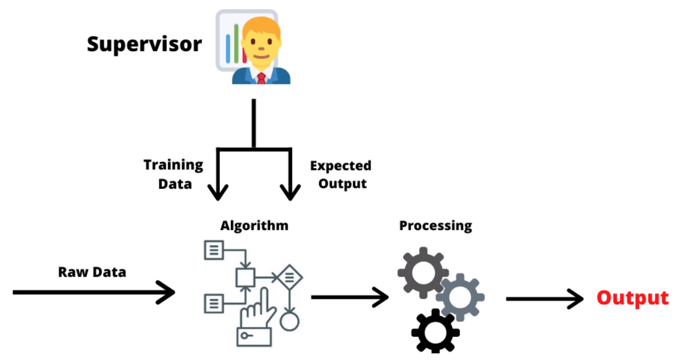

Documentation
Installation
Le chatbot a besoin de modules en plus qui ne sont pas intégrés dans Python, ces modules sont essentiellement destinés à simplifier le programme. Un programme nommé setup.bat ou setup.py permet d'installer tous les modules nécessaires en seulement 2 clics. Si vous voulez faire les intallations manuellement il faudra donc installer :
- nltk avec pip install nltk
- numpy avec pip install numpy
- os avec pip install os
- tkinter avec pip install tkinter
- json avec pip install json
- tflearn avec pip install tflearn
- tensorflow avec pip install tensorflow
si vous disposez d'un GPU nvidia qui contient des CUDA cores vous pouver installer tensorflow-gpu avec pip isntall tensorflow-gpu cela permettra d'utiliser la puissance de calcul de votre carte graphique (GPU) pour entrainer le chatbot.
Nous vous recommandons d'utiliser google colab et d'activer l'accelération par GPU ou TPU
Retrouvez toutes les informations ici dans le README.txt
Google Colab
Nous vous conseillons d'utiliser google colabotory pour tester l'entrainement pour 2 raisons :
- la rapidité d'entrainement
- la précision de l'entrainement qui est bien meilleur grâce à l'utilisation de puissant ASIC spécialisé pour tensorflow (TPU)
Mais cela a un inconvénient, Google colabotory ne prend pas en charge les interfaces graphiques, c'est pour cela que nous vous le recommandons que si vous voulez tester l'entrainement l'IA un grand nombre de fois
Cliquez ici pour accéder au notebook Google colabotory (il faudra se connecter avec un compte google pour pouvoir éxécuter le code). Penser à vérifier que l'accélération TPU est bien activé (Modifiée ==> paramètre du notebook ==> accélration materiel ==> TPU) et que le train.json est bien importé (il suffit de le glisser dans la barre de gauche lorsque la catégorie fichier est sélectionnée).
Démarche
Le principe du chat bot est de calculer la probabilité de toutes les réponses disponibles et de choisir celle qui est la plus probable entre toutes selon lui.
Stockage des données d'entrainement
Nous avons donc commencé par créer un fichier json qui contients toutes les données nécessaires pour l'entrainement du chat bot. Nous avons donc mis dans le fichier train.json un dictionnaire python qui contient : un tag, les questions types et leurs réponses.
Traitement des données
Pour analyser les données, on analyse tous les mots qui sont dans la phrase donnée pour pouvoir ensuite regarder combien de mots sont en commun dans les phrases du data qui servent à entrainer l'IA. L'IA va permettre de comprendre les racines des mots de savoir que gentillement peut vouloir dire gentil et de deviner quels sont les mots importants de la phrase, il va donc éliminer par lui même les : un, une, de, les, le, la... . L'intérêt d'utilisrt l'IA est qu'elle va d'elle même deviner les règles, ce qui va lui permettre d'être flexible sur les questions posées et donc de donner une réponse apropriée.
Le fonctionnement de l'IA
Pour ce chat bot le modèle choisi d'IA est le supervised learning.
Le supervised learning est une technique d'entrainement d'IA qui conssiste à donner les entrées et les sorties à un programme qui va poser les questions à l'IA qui va donner une réponse, lorsque la réponse est fausse l'IA enregistrera que cette réponse est fausse et qu'il faut donc donner une autre réponse. Lorsqu'elle a juste elle stocke la réponse juste pour pouvoir la redonner au moment où on lui demande.
